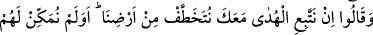
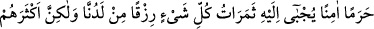
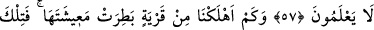
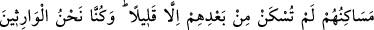
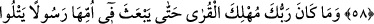
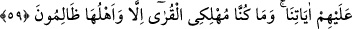
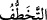

ŞIMARMIŞ NİCE MEMLEKETİN
HELÂK EDİLMESİ
57. “Biz seninle beraber doğru yola uyarsak, yurdumuzdan atılırız” dediler. Biz
onları, kendi katımızdan bir rızık olarak her şeyin ürünlerinin toplanıp getirildiği,
güvenli, dokunulmaz bir yere (Mekke-i Mükerreme’ye) yerleştirmedik mi? Fakat
onların çoğu bilmezler.
58. Biz, refahından şımarmış nice memleketi helâk etmişizdir. İşte yerleri!
Kendilerinden sonra oralarda pek az oturulabilmiştir. Onlara biz vâris olmuşuzdur.
59. Rabbin, kendilerine âyetlerimizi okuyan bir peygamberi memleketlerin ana
merkezine göndermedikçe, o memleketleri helâk edici değildir. Zaten biz ancak
halkı zalim olan memleketleri helâk etmişizdir.
Eğer “Biz” senin getirdiğin mesajı kabul edip gösterdiğin yoldan gidersek, senin
dinine girersek, “seninle beraber doğru yola uyarsak, yurdumuzdan atılırız dediler.”
Onunla beraber hidâyete tâbi olmanın mânâsı; hakikata götüren din ve sülûk yolunda
Peygamber (s.a.)’e uymak, ona iktidâ etmektir.
“
”, süratle kapıp çarpmak, çarpılmak ve kopmak gibi mânâlara gelir.
Bu âyet, Harîs b. Osman b. Nevfel b. Abd-i Menâf hakkında nâzil olmuştur. O,
peygamber (s.a.)’e gelmiş ve “Biz, senin hak üzerinde olduğunu biliyoruz...” demişti.
Senin getirdiğin mesaj haktır ve söylediğin söz doğrudur
Buyurduğun da bizim saâdetimizdir
Yaşadığımız müddetçe ve vefatımızdan sonra saâdetimize vesiledir.
“Sen asla bir yalan söylemedin ki, bugün biz seni itham edelim. Fakat biz şundan
korkarız ki şâyet sana tabi olup Arablara muhâlefet etsek, onlar bizi çiğneyip geçerler
ve bizi Mekke’den ve Harem’den çıkarırlar. Çünkü onlar bize karşı birleşip ittifak